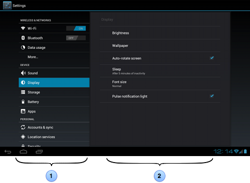
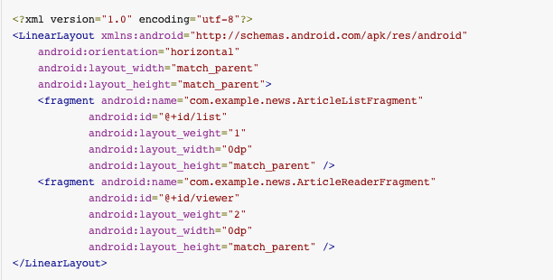

Getting Started
Unit 1.5: Fragments
Nitya Narasimhan
BACK TO UNIT 1
#1.5 Building a Dynamic UI with Fragments
#1.5.0 What are Fragments?

Decompose app functionality and UI into modules
Reference
#1.5.1 About Fragments
- Embed in Activity. Reuse across Activities.
- Add/Remove dynamically. Minimize switches.
- Has/Manages own lifecycle, state, backstack
- Lifecycle co-ordinated with host Activity's
- Lives within ViewGroup in Activity
- Manages own layout (Activity fragment)
- Can be used as invisible worker (no UI)
Require API 11 or higher (or Support Library)
Reference
#1.5.1.1 The Fragment Lifecycle
Subclass Fragment. Activity-like callbacks.
Reference
#1.5.1.2 Special Fragment Types
Display floating dialog. Backstack-navigable.
Subclass DialogFragment
Reference
#1.5.1.3 Special Fragment Types
List of items managed by Adapter. (like ListActivity)
Subclass ListFragment
Reference
#1.5.1.4 Special Fragment Types
Hierarchy of Preference objects. (use for Settings)
Subclass PreferenceFragment
Reference
#1.5.1.5 Add Declaratively
Specify fragment layout properties
within activity layout xml
Reference
#1.5.1.6 Add Programmatically
/* Instantiate the Fragment you want to add */
ExampleFragment fragment = new ExampleFragment();
/* Get handle to FragmentManager for Activity */
FragmentManager fragmentManager = getFragmentManager()
/* Begin a new FragmentTransaction */
FragmentTransaction fragmentTransaction =
fragmentManager.beginTransaction();
/* Add fragment to specified layout & commit */
fragmentTransaction.add(R.id.fragment_container, fragment);
fragmentTransaction.commit();
Reference
#1.5.1.6 Fragment Manager
/* Instantiate the Fragment you want to add */
ExampleFragment fragment = new ExampleFragment();
/* Get handle to FragmentManager for Activity */
FragmentManager fragmentManager = getFragmentManager()
/* Begin a new FragmentTransaction */
FragmentTransaction fragmentTransaction =
fragmentManager.beginTransaction();
/* Add fragment to specified layout & commit */
fragmentTransaction.add(R.id.fragment_container, fragment);
fragmentTransaction.commit();
dynamically (e.g., from user interactions)
Reference
#1.5.1.7 Inflate Fragment
public static class ExampleFragment extends Fragment {
// container is parent ViewGroup
// inflater is contextual to device, returns fragment ViewGroup
// inflater 'can' explicitly attach child VG to parent VG
@Override
public View onCreateView(LayoutInflater inflater,
ViewGroup container,
Bundle savedInstanceState) {
// Inflate the layout for this fragment
return inflater.inflate(R.layout.example_fragment,
container,
false);
}
}
Reference
#1.5.1.8 Fragment LifeCycle

Reference
#1.5.1.8 States & Relationships
- Transient Creation
- Running = Visible, Running Activity
- Paused = Visible, Paused Activity
- Stopped = Invisible
- Transient Destruction
/* Fragments can access their host activity */
View listView = getActivity().findViewById(R.id.list);
/* Activity can access its hosted fragment */
ExampleFragment fragment =
(ExampleFragment) getFragmentManager().findFragmentById(R.id.example_fragment);
Reference
#1.5.1.8.2 Event Callbacks to Activity
/* Fragment defines listener interface for event */
public static class FragmentA extends ListFragment {
...
// Container Activity must implement this interface
public interface OnArticleSelectedListener {
public void onArticleSelected(Uri articleUri);
}
...
}
/* And casts host Activity onAttach() to ensure compliance */
public static class FragmentA extends ListFragment {
OnArticleSelectedListener mListener;
...
@Override
public void onAttach(Activity activity) {
super.onAttach(activity);
try {
mListener = (OnArticleSelectedListener) activity;
} catch (ClassCastException e) {
throw new ClassCastException(activity.toString() + " must implement OnArticleSelectedListener");
}
}
...
}
Reference
#1.5.1.8.3 Fragments & BackStack
- Activity goes on system-managed backstack
- Happens automatically (on 'back')
- Fragment placed on activity-managed backstack
- Requires explicit request addToBackStack()
Reference
#1.5.1.9 Code Walkthrough
Download and install the
FragmentBasics.zip demo
From Android Developers Site
http://developer.android.com/training/basics/fragments/index.html
Next Up
- WIREFRAMING (FluidUI, Balsamiq)
- RESUME APP Individual Project (20%)
- TEAM UP Group Project (40%)
- TEST TIME: Mar 14, Multiple Choice (10%)
- ASSIGNMENT: http://bit.ly/hawks-help-assign1
#1.5.2 Creating a Fragment
Reference
#1.5.3 Building a Flexible UI
Reference
#1.5.4 Communicating with Other Fragments
Reference
#1.6 Saving Data
#1.6.1 Saving Key-Value Sets
Reference
#1.6.2 Saving Files
Reference
#1.6.3 Saving Data in SQL Databases
Reference
#1.7 Interacting with Other Apps
#1.7.1 Sending the User to Another App
Reference
#1.7.2 Getting a Result from the Activity
Reference
#1.7.3 Allowing Other Apps to Start Your Activity
Reference